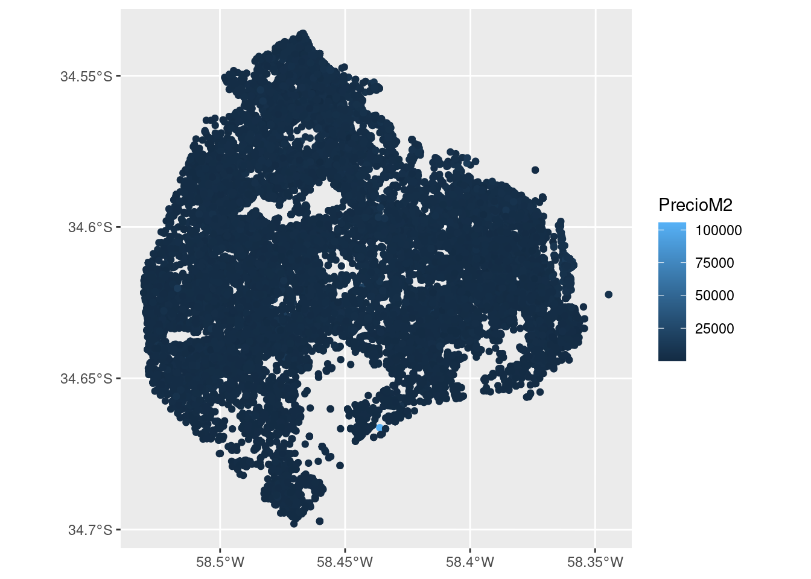
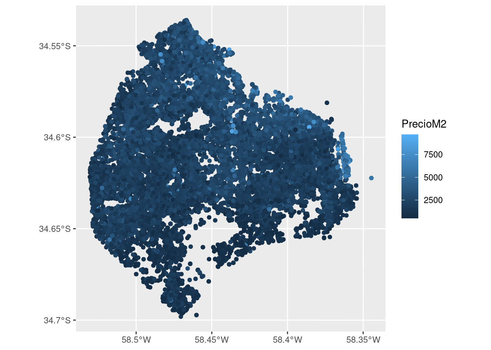
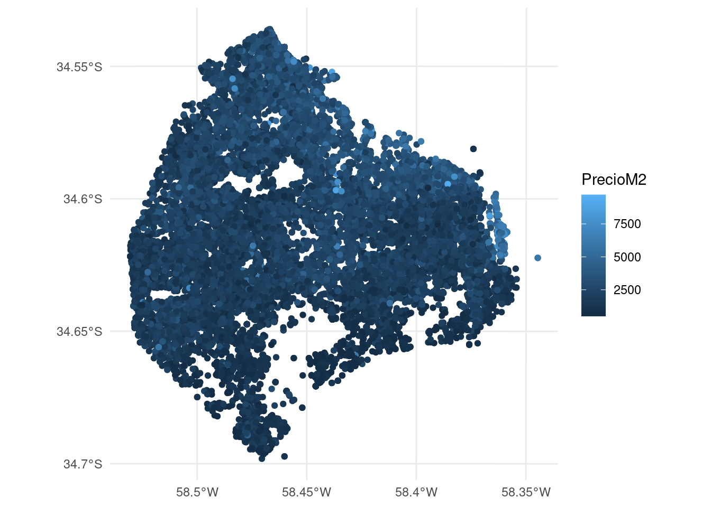
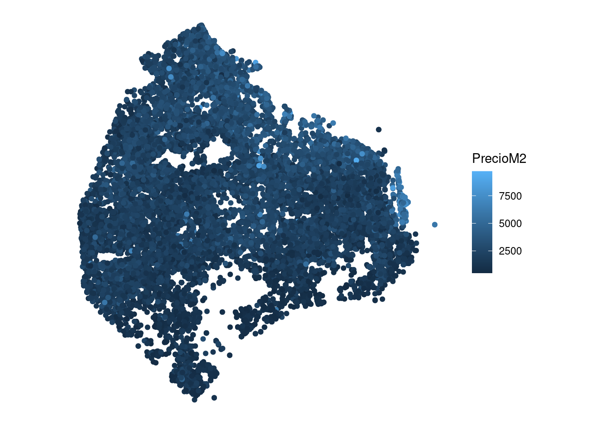
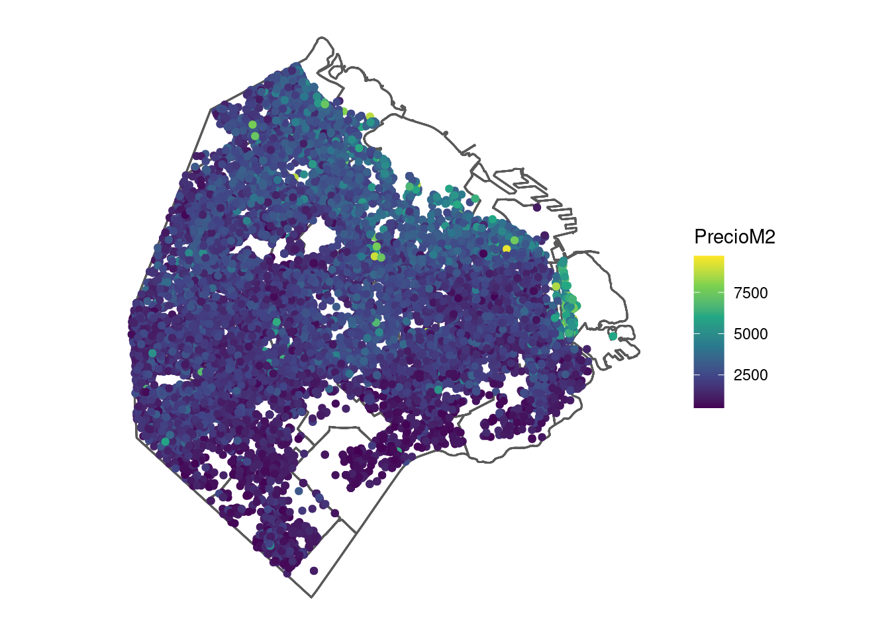
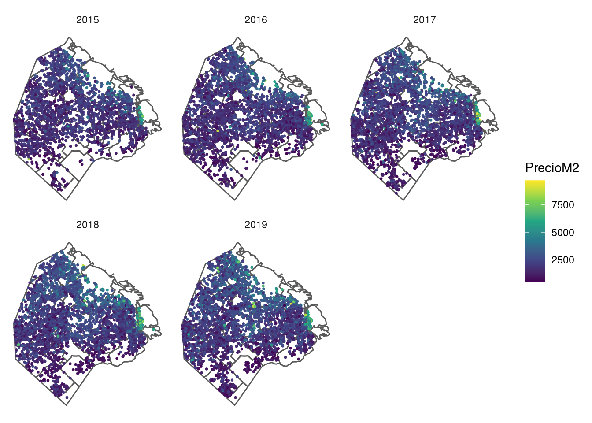
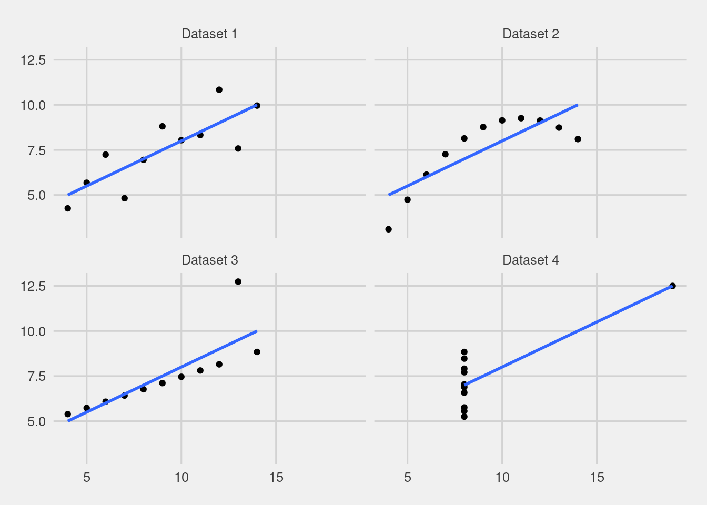
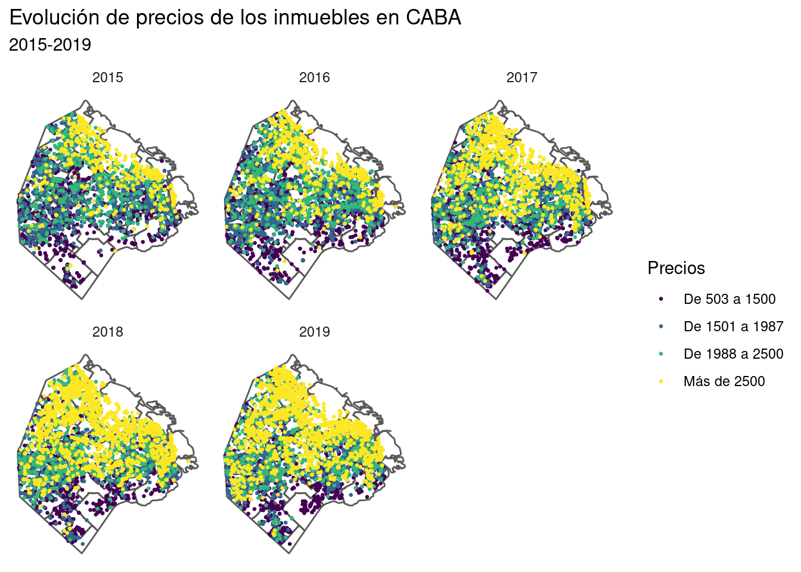

En el capítulo 4 de este mismo libro introducimos a los datos espaciales. Allí vamos a analizar por qué requieren de un tratamiento especial tanto en el formato en el que están almacenados y su manera de representarse. En esta sección vamos a mostrar las capacidades que tiene el paquete ggplot para hacer mapas en R.
Vamos a trabajar con dos data frames, uno que contiene el precio de los inmuebles de la Ciudad de Buenos Aires como puntos, y otro que tiene el precio de los inmuebles promeido por barrio. Ambos data frame son, en realidad, objetos sf, que se ven en detalle en el capítulo 4.
library(sf)
preciosCABA <- read_sf('https://github.com/martintinch0/CienciaDeDatosParaCuriosos/raw/master/data/PreciosCABASample.geojson')
preciosCABABarrios <- read_sf('https://raw.githubusercontent.com/martintinch0/CienciaDeDatosParaCuriosos/master/data/PreciosCABABarrioYear.geojson')
proyeccionCenso2010 <- '+proj=tmerc +lat_0=-34.629717 +lon_0=-58.4627 +k=1 +x_0=100000 +y_0=100000 +a=6378388 +b=6378386.996621622 +towgs84=-148,136,90,0,0,0,0 +units=m +no_defs '
preciosCABA <- st_transform(preciosCABA,crs = proyeccionCenso2010)
preciosCABABarrios <- st_transform(preciosCABABarrios,crs = proyeccionCenso2010)Una vez que ejecuten todo el código van a tener dos objetos nuevos: preciosCABA y preciosCABABarrios. El primero de ellos es una muestra estratificada por año y barrios (es decir que toma una muestra para cada uno de estos grupos) de los anuncios de ventas de inmuebles en la Ciudad de Buenos Aires, mientras que el segundo muestra la evolución por año del precio promedio en USD de los inmuebles ofertados.
Hacer un gráfico con objetos de clase sf es realmente fácil con ggplot, solo debemos agregar geom_sf. Imaginen que queremos graficar los avisos de todos los años:

¿Fácil, no? Y también muy poco estético, pero ya vamos a tener tiempo de corregirlo. Presten atención a la escala, aparecen todos los puntos en negro, excepto uno que aparece en azul claro, indicador de valor muy alto. Evidentemente existe algún valor extremo, y esto suele ser algo normal. Como nuestro objetivo es simplemente hacer gráficos, vamos a eliminar estos datos, pero no deberían hacerlo con tanta facilidad en sus investigaciones:
preciosCABA <- preciosCABA %>% filter(PrecioM2<10000 & PrecioM2>500)
ggplot() +
geom_sf(data = preciosCABA, mapping = aes(color=PrecioM2)) Pareciera haber mejorado en algo, pero por ahora sigamos con nuestro ejercicio. Lo primero que querríamos hacer es eliminar ese fondo y, quizás, las cuadrículas y también la latitud y longitud que nos señalan los ejes. Lo primero lo podemos hacer usando algunos de los temas que vienen con ggplot, por ejemplo theme_minimal()

Para eliminar las lineas de fondo y las referencias a la longitud y latitud solo debemos agregar coord_sf(datum = NA):
ggplot() +
geom_sf(data = preciosCABA, mapping = aes(color=PrecioM2)) +
theme_minimal() + coord_sf(datum = NA)
Mucho mejor. Sin embargo, si queremos mostrar el precio de las propiedades en el mapa según su valor debemos poner un contexto y también mejorar la escala. El Contexto serán los datos de polígonos que tenemos en el otro dataset, mientras que la escala intentaremos solucionarla usando la famosa paleta de viridis:
ggplot() +
geom_sf(data=preciosCABABarrios, fill=NA) +
geom_sf(data = preciosCABA, mapping = aes(color=PrecioM2)) +
scale_color_viridis_c() +
theme_minimal() +
coord_sf(datum = NA) 
Mucho mejor. Ahora bien, son muchos datos, qué tal si mostramos los distintos valores por año? Podemos hacer esto mediante la función facet_wrap():
ggplot() +
geom_sf(data=preciosCABABarrios, fill=NA) +
geom_sf(data = preciosCABA, mapping = aes(color=PrecioM2), size=0.5) +
facet_wrap(facets = ~ Year) +
scale_color_viridis_c() +
theme_minimal() +
coord_sf(datum = NA)
Por lo visto, los valores de los precios se encuentran sesgados hacia la derecha (valores altos), lo que no nos permite visualizar correctamente los valores en los mapas. Creemos una variable categórica de los precios y veamos si mejora.
preciosCABA<-preciosCABA %>%
ungroup %>%
mutate(PrecioM2Cat = cut(PrecioM2,quantile(PrecioM2), include.lowest = TRUE))
ggplot() +
geom_sf(data=preciosCABABarrios, fill=NA) +
geom_sf(data = preciosCABA, mapping = aes(color=PrecioM2Cat,fill=PrecioM2Cat), size=0.5) +
facet_wrap(facets = ~ Year) +
scale_color_viridis_d() +
scale_fill_viridis_d() +
theme_minimal() +
coord_sf(datum = NA) +
labs(fill="Precios",color="Precios")
En la primera parte creamos la categoría de la variable con la función cut(), que recibe 1) un conjunto de valores, 2) un vector con puntos de quiebre y nos devuelve un factor que dice en cada cual de esos segmentos caen los valores. Aunque lo hace muy bien, casi nunca nos gusta los labels que asigna, es decir las etiquetas que corresponden a cada nivel. Existen muchas formas de cambiar esto, una deellas es usando la función level(). Lo único que hay que hacer es pasarle los nuevos valores que deben reemplazar a los viejos. Veamos, primero, que devuelve la función:
## [1] "[503,1.51e+03]" "(1.51e+03,2e+03]" "(2e+03,2.55e+03]" "(2.55e+03,9.71e+03]"Ahora ya podemos reemplazar estos valores por algunos que nos parezcan más razonables. Veamos los valores de quiebre y creemos una mejor leyenda:
## 0% 25% 50% 75% 100%
## 503 1513 2000 2550 9706nuevosLabels <- c('De 503 a 1500', 'De 1501 a 1987', 'De 1988 a 2500','Más de 2500')
levels(preciosCABA$PrecioM2Cat) <- nuevosLabelsAdemás de esto, vamos a ponerle un título y un subtítulo para agregar más información a nuestro mapa:
ggplot() +
geom_sf(data=preciosCABABarrios, fill=NA) +
geom_sf(data = preciosCABA, mapping = aes(color=PrecioM2Cat,fill=PrecioM2Cat), size=0.5) +
facet_wrap(facets = ~ Year) +
scale_color_viridis_d() +
scale_fill_viridis_d() +
theme_minimal() +
coord_sf(datum = NA) +
labs(fill="Precios",color="Precios",title="Evolución de precios de los inmuebles en CABA",subtitle='2015-2019')
A veces, mostrar muchos mapas estáticos no comunica tan bien como hacerlo de una manera animada. El paquete gganimate nos permite usar prácticamente la misma sintáxis de ggplot para hacer animados a nuestros mapas. Hagamos uno que muestre los precios de los inmuebles por año para cada barrio de la Ciudad de Buenos Aires:
library(gganimate)
preciosCABABarrios<-preciosCABABarrios %>%
mutate(PrecioM2Cat = cut(PrecioM2,quantile(PrecioM2), include.lowest = TRUE))
levels(preciosCABABarrios$PrecioM2Cat) <- c('De 761 a 1661', 'De 1662 a 1973', 'De 1974 a 2319', 'Más de 2320')
ggplot(data = preciosCABABarrios, mapping = aes(fill=PrecioM2Cat)) +
geom_sf(color='white') +
guides(size=FALSE) +
theme_minimal() +
coord_sf(datum = NA) +
scale_fill_viridis_d() +
labs(title = "Mapa de precios de inmuebles en CABA",
y = "",
subtitle="Año: {current_frame}",
fill="Categoría de precios",
caption="Fuente: Properati Data") +
transition_manual(Year)## Warning: No renderer available. Please install the gifski, av, or magick package to create animated output## NULL